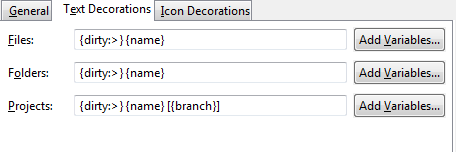
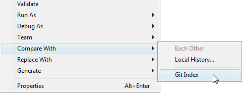

| Inspecting the state of the Repository | ||
|---|---|---|
|
|
|
|
| Working with remote Repositories | Committing changes | |
Label decorations show Git specific information on resources under Git version control. They appear in all views showing model objects, like Package Explorer, Project Explorer, Navigator, Hierarchy View.
The Git label decorations can be switched on globally in the Preference Menu (Window -> Preferences) under General -> Appearance -> Label Decorations.
More detailed settings can be done in the Preferences under Team -> Git -> Label Decorations.
There are two different types of label decorations: text decorations and icon decorations.
Text Decorations
Text decorations appear on the left or right side of the text label. They can be configured on the Preferences dialog under Team -> Git -> Label Decorations on the tab "Text Decorations". For example, he default for a dirty resource is a > on the left side of its name.
These are the default settings:

For files and folders there are the variables "name", "dirty" and "staged". "Dirty" and "staged" are flags; if they are true, the text after the colon is displayed. For the project name there is additionally the variable "branch". If no branch is checked out the decoration shows the name of the commit.
Icon Decorations
Icon decorations appear on the lower left corner of the icon label. They can be configured on the Preferences dialog under Team -> Git -> Label Decorations on the tab "Icon Decorations".
These are the default decorations:

A summary of the status of all changed tracked files can be seen on the commit dialog.
In daily work most commonly you will want to see the changes between your last commit, your index, and your current working tree.
Compare working tree with index
The difference between the current working directory and the index can be viewed from the context menu Compare With -> Git Index.

Compare working tree with last commit
This feature is not implemented yet. As a manual workaround you can view the content of the file after your last commit from the History View (Team -> Show in Resource History). Here you can see the differences between a commit and its parent by double-clicking on the entry in the Path-column on the lower right. You also can use Quickdiff (see below) by choose HEAD as quick baseline.
Compare index with last commit
This feature is not implemented yet.(As a manual workaround you can view the content of the file after your last commit from the History View (Team -> Show in Resource History). Here you can see the differences between a commit and its parent by double-clicking on the entry in the Path-column on the lower right.
Instead of using a compare editor you can enable quick diff support and see the changes within the text editor. This feature can be enabled via the General > Editors > Text Editors > Quick Diff preference page:

You then will see the difference annotation on the left hand side of the editor:

If you move your mouse over the annotation you see the content of the version you are comparing to:

Per default, the comparison is against the HEAD. You can determine the version you are comparing to, the so-called quickdiff baseline, from the context menu of a commit in the history view (Team -> Show in Resource History). Here are three menu entries:
|
|

|
|
| Working with remote Repositories | Committing changes |